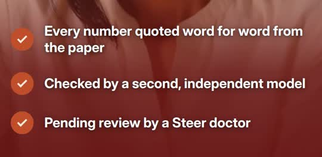
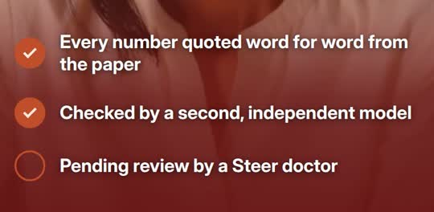

Checked by code against the paper and by an independent model. Not clinical approval: every post is pending review by a Steer doctor.
Blocked (re-checked with today's rule on the stored line)
“Lean, active, eating home food. Does diabetes research still apply to you?”
FRAMING_ADDS_ATTRIBUTE ['active', 'home food']: not stated by the post's claims
Passed after the rule
“Normal BMI, so diabetes is far away?”
Cross-check: supported (glm-5.3, different_provider)
Rule added: b5f37cf Framing lines may not add a lifestyle attribute the post's claims do not state
Blocked (re-checked with today's rule on the stored line)
“Among 28 randomised controlled trials, weight was no different between treatment and control groups 1.4 years after stopping weight management medicines.”
QUALIFIER_MISSING 'no different from control' must say the weight came back to the comparison groups' level, not that the medicine did nothing
Passed after the rule
“Among 28 randomised controlled trials, weight in treatment groups came back to the control groups' level 1.4 years after stopping.”
Cross-check: supported (glm-5.3, different_provider)
Rule added: b166474 West boundaries: 0.4 kg needs 'not a prediction for you' and 'not only GLP-1' on the same slide; 'no different from control' must carry the return meaning; the exact class name GLP-1 is not a framing number; muscle-b drops the high-heterogeneity caveat · West boundaries v3
Blocked (stored failure)
“Aged 45+ in Chennai, Delhi and Karachi, with BMI under 25 kg/m2, compared with US whites: South Asian women had 5.27 times higher diabetes risk (95% CI 3.64 to 7.54) and US black women 2.36 times (95% CI 1.56 to 3.78).”
COMPARATOR_NOT_IN_CLAIM 'US whites: South Asian women had 5' is not a comparison group of the line's claims
Passed after the rule
“Aged 45+ in Chennai, Delhi and Karachi, with body mass index under 25 kg/m2: diabetes risk was 5.27 times higher (95% CI 3.64 to 7.54) in South Asian women and 2.99 times higher (95% CI 2.09 to 4.28) in men than in US whites.”
Cross-check: supported (glm-5.3, different_provider)
Rule added: 8f7e4c1 Comparator phrases end at a colon
Blocked (stored failure)
“On average, adults with overweight or obesity regained 0.4 kg monthly after stopping medicines, not only GLP-1; not a prediction for you.”
AVOID_PHRASE 'GLP-1': the 0.4 kg average is across all weight-management medicines, not GLP-1 only
Passed after the rule
“Adults with overweight or obesity regained 0.4 kg monthly on average after stopping weight management medicines; not only GLP-1, not a prediction for you.”
Cross-check: supported (glm-5.3, different_provider)
Rule added: 5860cfb West boundaries v4: avoid_phrase 'GLP-1' excepts the exact negation 'not only GLP-1' the clearance requires; 'any one person' is no number · West boundaries v4
Blocked (stored failure)
“For readers worried that weight will return after stopping a medicine. It answers that doubt with an average across all weight management medicines, clearly not a forecast for any one person. It then shows where the trial evidence sits over a longer time, and ends with a doctor conversation.”
NUMBER_NOT_IN_CLAIM 1
Passed after the rule
“For readers who worry that weight will come back after stopping a medicine. It answers that doubt with a group average across all weight management medicines, stated as not a prediction for any person, so the number informs without scaring. The second finding shows what happens to groups over time, with wording that weight came back to the comparison level rather than the medicine doing nothing. Brand and call to action follow, inviting a doctor conversation.”
Rule added: 5860cfb West boundaries v4: avoid_phrase 'GLP-1' excepts the exact negation 'not only GLP-1' the clearance requires; 'any one person' is no number
Blocked (stored failure)
“Patients with obesity on GLP-1 receptor agonists at obesity doses: absolute lean mass fell 1.74 kg (95% CI −3.04 to −0.45); results varied a lot between studies.”
NUMBER_NOT_IN_CLAIM 1.74 kg
Passed after the rule
“Obesity wale patients mein, jinhe obesity doses par GLP-1 receptor agonists diye gaye, absolute lean mass 1.74 kg gira (95% CI: −3.04 to −0.45; p < 0.00001; I² = 98%).”
Cross-check: supported (glm-5.3, different_provider)
Rule added: b11adf7 Checks: a decrease word carries the number's sign ('fell 1.74 kg' = the quote's -1.74 kg, never a wrong sign or size); caption-hi keeps require_with labels in English
Blocked (stored failure)
Heard: “Chennai, Delhi and Karachi adults aged 45 when over with BMI under 25, South Asian women had 5.27 times higher diabetes risk and meant to 0.99 times higher versus US Whites.”
AUDIO_NUMBER_MISMATCH screen ['2.99', '5.27', '25', '45'] heard ['0.99', '5.27', '25', '45']
Passed after the rule
audio round trip passed
Rule added: Writer brief rule: never put 'men' or 'women' directly before a number
Blocked (found in review)

PENDING_ITEM_TICKED the frame showed all 3 items ticked, incl. 'Pending review by a Steer doctor'
Passed after the rule

the pending item stays an empty ring; the decoded-frame check counts 2 filled circles of 3
Rule added: 40a54a0 Reel: the pending review item is never drawn ticked (done flag; a decoded-frame check counts filled circles: PENDING_ITEM_TICKED); one-number lines get a hero card; the health scenes cycle the neutral clips; the evidence phone pans a readable strip of the quoted page lines (~30 px text)
benchmark of 11 public posts from 7 accounts, hand-picked, not market analysis
| doubt | k | n | c | m | flags | lines | f | opp |
|---|---|---|---|---|---|---|---|---|
| muscle | 3 | 11 | 0 | 52 | 0 | 0 | 0.0000 | 0.2727 |
| safe | 1 | 11 | 0 | 52 | 0 | 0 | 0.0000 | 0.0909 |
| for_me | 1 | 11 | 46 | 52 | 91 | 930 | 0.0978 | 0.0115 |
| only_diabetics | 0 | 11 | 0 | 52 | 0 | 0 | 0.0000 | 0.0000 |
| regain | 0 | 11 | 6 | 52 | 3 | 132 | 0.0227 | 0.0000 |
doubt muscle appears in 3 of 11 benchmark posts; our own output shows CONTEXT_NOT_IN_QUOTE x17 -> the next brief targets muscle with rule a context line is a verbatim run of the quote or is dropped
Brief change: "rules": ["a context line is a verbatim run of the quote or is dropped"],
The post it produced (post-8369bdf3): “Losing weight, losing lean mass too?”
Rule added: steer learn (S6): one brief rule from the benchmark and our own rejections